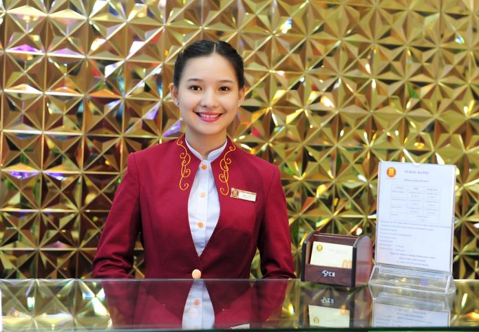

Lạc Đức Lương
Nhân viên lễ tân - hành chính văn phòng
Thông tin cá nhân
- Địa chỉ : 4 Phố Doãn Dinh An , Xã 05 , Quận 7 , Quảng Trị
- SDT: 84-651-602-1503
- Email: vien.hoan@bang.com
- Năm sinh: 1997
Kỹ năng
- Học vấn :
Chuyên ngành : Quản trị KINH DOANH
Cao đẳng bán công nghệ và quản trị
tốt nghiệp loại : TB Khá
- Bằng cấp : TOEIC Certificate of Achievement
- Kinh nghiệm :
NHÂN VIÊN SALE ADMIN KIÊM MUA HÀNG
(06/2018-02/2020)
CÔNG TY TNHH A PLUS GOURMET FOODS
- Năng khiếu : Vẽ tranh , diễn kịch , ...
Định hướng phát triển cá nhân
Hiện tôi chưa có kinh nghiệm về chuyên môn lễ tân
và đang học tập , rèn luyện để hướng đến mục tiêu
nghề nghiệp đã nêu trên . Tôi đang học thi tin học
MOS excell , luyện thi TOEIC để khả năng về
ngoại ngữ
tốt hơn